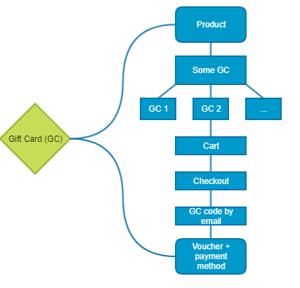
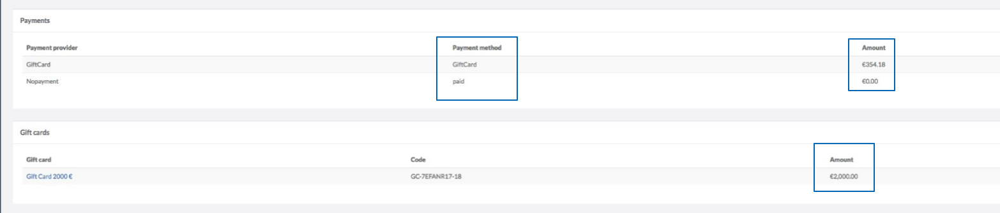

Gift Cards Purchase and Redeeming
Gift Cards are sensible data and can be used to pay orders, therefore please keep in mind that they should be protected just like real money.
This article describes general concepts of gift cards, their purchase and redeeming process as well as various use case scenarios.
In the Spryker shop, the gift cards follow the same rules and bought as products, they can even be bundles, however they are purely virtual and do not require shipping. Gift card can be applied as a voucher and redeemed to pay an order. Therefore, the gift cards have two characteristics - a product characteristic and a voucher (+payment method) characteristic. When gift card is bought, it is treated like a product, and when it is applied - it’s a voucher that can be used as a payment method.
Gift cards have variants just like abstract products, i.e. for example, a New Year Gift Card can have all the different values - 50 Euro, 100 Euro, etc. - in this case, the New Year Gift Card would be handled like an abstract product, and 50 Euro, 100 Euro etc. gift cards would be its variants.
When customer puts a gift card to cart, it is possible to change variant, quantity and remove it from cart, just like any abstract product. It should be noted however, that no discounts are applied on gift card products, since the price paid for the gift card must equal the value of the gift card. Even though technically it is possible to have different amounts for gift card’s price and value (say, the gift card price is 100 Euro however the gift card value is 150 Euro), but you need to consult your local legislation to make sure it would be legal in your country.

It is not possible to pay a gift card by using another gift card, even if order contains other products besides the gift card. Also, the range of payment methods that can be used to pay for gift cards can be limited. That is, it is possible to filter out the payment methods for gift cards. By default, invoice payment method is not available for gift cards to avoid fraud. Payment methods available for gift cards can be specified in the configuration file.
After customer buys a gift card, he/she gets a code sent to the provided e-mail address.
Once the gift card code has been generated, it becomes a voucher that can be used as a payment method.
The gift card product-voucher transition workflow can be schematically represented as follows:

When buying a gift card, the shipment method selection step is skipped on Yves. In the background, there is “noshipment” constant in the app configuration, which can be selected to configure shipment for specific type of products, in our case, to gift cards.
With a gift card code in place, users get an alternative payment method to pay for their orders. The payment workflow with the gift card would be as follows:
- User puts products to cart, and, assume he/she has discounts for the products and also applies a voucher.
- Order subtotal is calculated: General products’ prices without the discounts etc.
- Order grand total is calculated: Price including discounts, vouchers, taxes etc.
- Gift card is applied: Grand total minus Gift Card value. If the order value is lower or equals the gift card value, the checkout workflow stops here, as the gift card is used to fully pay the order.
- If the order value is higher than the value of the applied gift, price to pay is calculated: remaining sum to be paid using an additional payment method.
- Payment method selection and payment.
Schematically, the order placement process with gift card looks as follows:

In the administration interface, the shop administrator can see if an order was paid with a gift card and/or a regular payment method. The amount paid with the gift card as well as the amount paid with a regular payment method (if applicable) are shown as well.

Gift card value checking strategy means the way the gift cards are checked for the value they represent. There are two strategies that can be followed: Replacement and Balance. Out of the box, Replacement strategy is applied for the gift cards in Spryker shop. However it can be defined on the project level which strategy is to be used, by installing a respective module and enabling a plugin.
Replacement Strategy
Replacement means that if after using a gift card it has a remaining balance, a new gift card with the value equal to the remaining balance is issued for the gift card owner. For example, a user has a gift card for 100 Euro, but spends just 60 Euro to pay the order. In this case a new 40 Euro gift card with a new code will be sent to the user. The old gift card code would not be valid anymore.
For this strategy, gift cards have a pattern for codes generation. For each gift card code generation a pattern from the previous gift card is used. For example, if code X-GC-{number} is used for gift cards generation, where {number} is the pattern, the 100 Euro gift card code generated for customers would be X-GC-1, and the code generated for the remaining 40 Euro would be X-GC-2 etc.
The main advantage of this strategy is that one and the same gift card code can not be used twice if the gift card has a remaining balance on it after a purchase has been made. This might be especially useful, for example, in case when a customer wants another customer use a part of value from his/her gift card. In this case, the initial gift card owner would get an email with the new code for the remaining gift card value.
Balance Strategy
In case of the Balance strategy, gift card purchase history and gift card balance information are checked. If after paying an order a gift card has remaining balance on it, then, in contrast to the Replacement strategy, the user does not get a new gift card code with the new gift card value, but old gift card code is used instead. The remaining gift card value is calculated by the formula: GC Value - Value of all orders where it is used.
With this strategy, the shop administrator will see gift card balance information: date when the gift card was used, customer who used the gift card, gift card code and spent value.
Even though the Balance strategy is a bit more complicated than Replacement, it provides the shop owner with detailed information about the gift card as well as the purchase history with it. From the customer’s perspective, this strategy might be a better option if a gift card is used by one person and it does not make sense to send emails with new codes every time a gift card was used.